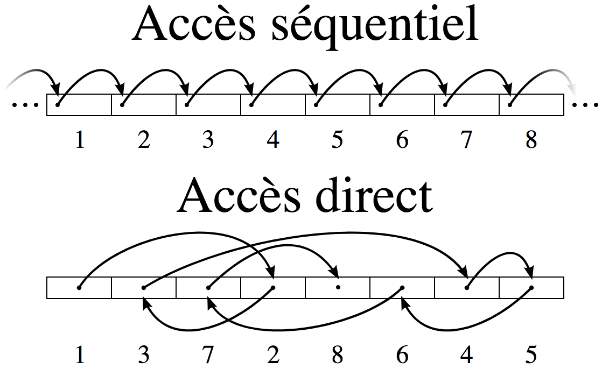

P3
# Le # indique les commentaires
# Le P3 signifie que les couleurs sont en ASCII,
3 2
# par 3 colonnes et 2 lignes,
255
# ayant 255 pour valeur maximum, et qu'elles sont en RGB.
255 0 0 0 255 0 0 0 255
255 255 0 255 255 255 0 0 0Chapitre V: Langages et programmation II
Python avancé
I. Lecture et écriture dans un fichier
1. La notion de fichier
Qu’est ce qu’un fichier ?

Figure 1. Un exemple de fichier
Fichier: collection d’informations stockées sur une mémoire morte (disque dur, clé USB,…)
Deux types de fichiers:
Les fichiers binaires qui ne contiennent pas que du texte.
Les fichiers textes qui ne contiennent que du texte (lettres, ponctuations, nombres, …).
Binaire ou texte ?
.JPEG
.HTML
.txt
.MP3
.PNG
.SVG
.PPM
.PDF
.py
2. La notion de format
Un exemple, le format .PPM:
Que représente cette image ?
Le format de fichier est une convention déterminant l’organisation de l’information dans le fichier.
Métadonnées
Chaque fichier comporte un certain nombre de métadonnées — informations concernant les informations—
Exemple: longueur du fichier, auteur, date de dernière modification…
Attention
Un format tel que le .JPEG contient un grand nombre de métadonnées que vous ne souhaitez peut être pas partager.
3. Accéder à un fichier texte avec Python
Pour accéder à un fichier, on utilise la fonction: open()
varfichier = open(nom_du_fichier, mode_d_acces, encoding = enco)nom_du_fichier: une chaîne qui contient le chemin du fichier
mode_d_acces :
Le mode d’accès 'r' pour la lecture (read)
'w' pour l’écriture (write)
'a' pour l’ajout (append)
…
encoding va correspondre à l’encodage, par défaut, utf-8
varfichier fait maintenant référence à objet faisant le lien entre Python et le fichier.
4. Lire dans un fichier
# Ouverture d'un fichier en lecture:
f = open("spam.txt", "r")La lecture d’un fichier texte est séquentielle.

On peut lire caractère par caractère.
# chars est une chaîne contenant les 50 premiers caractères
#du fichier
chars = f.read(50)
# charsbis est une chaîne contenant les deux suivants
charsbis = f.read(2)# texte contient tout ce qu'il reste à lire dans le fichier
texte = f.read()On peut lire ligne par ligne
# ligne contient la ligne suivante
# avec le caractère "\n" à la fin
ligne = f.readline()Python est for
#Ces instructions permettent d'afficher le fichier ligne par ligne
for i in f:
print(i)5. Ecrire dans un fichier
Deux modes d’écriture:
Le mode "w"
Il va créer le fichier ou l'écraser s’il existe déjà.
# Ouverture d'un fichier en écriture:
f = open("spam.txt", "w")Le mode "a"
Il permet d’ajouter d’écrire à la fin du fichier. (Crée un fichier s’il n’existe pas.)
# Ouverture d'un fichier en écriture:
f = open("spam.txt", "a")L’écriture est aussi séquentielle
# Pour écrire
f.write("hello")
# write n'ajoute pas d'espace ou de saut de ligne
f.write(" world\n")
f.write("!")Le fichier contient maintenant la ligne "hello world".
Et une ligne: "!"
6. Libérer le fichier
Un fichier est une ressource partagée, il faut le libérer après l’avoir utilisé avec:
f.close()Idéalement, il faudrait gérer les éventuelles erreurs, et faire en sorte que le fichier se ferme en cas d’erreur.